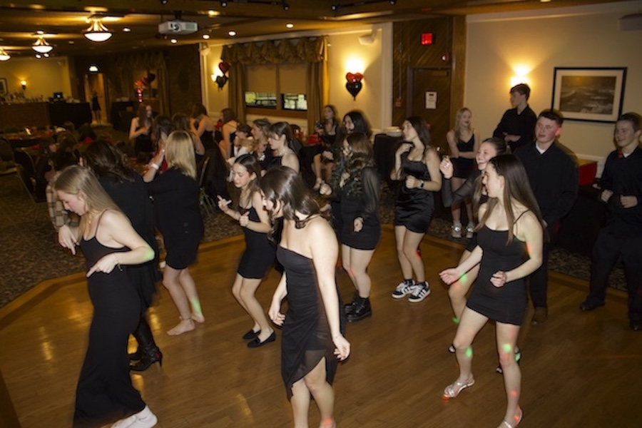
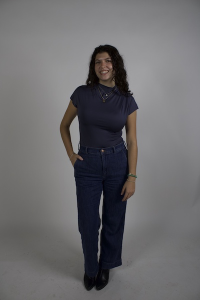
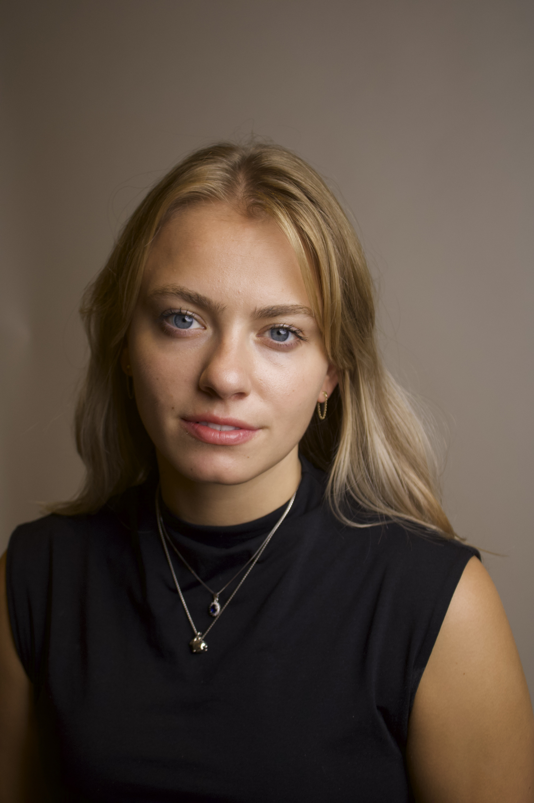
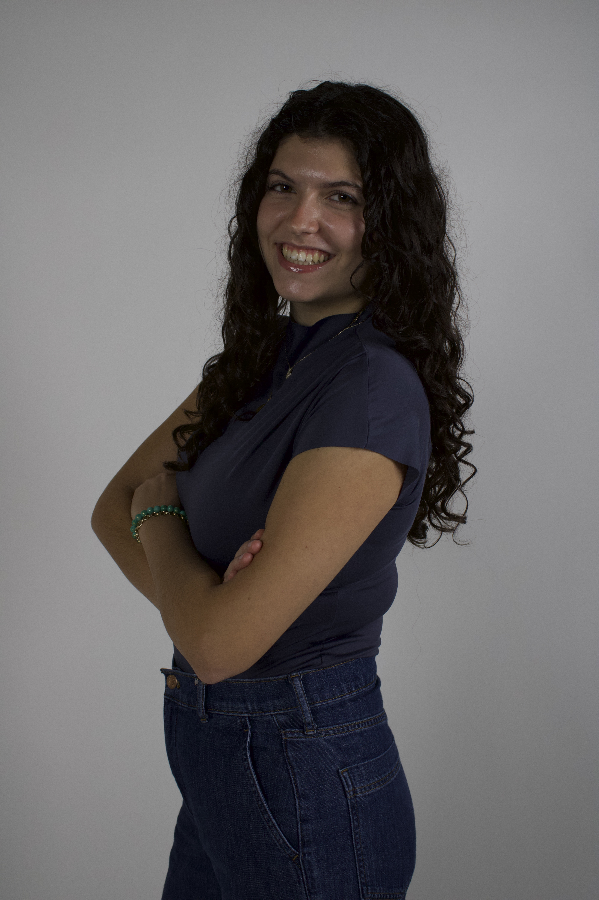
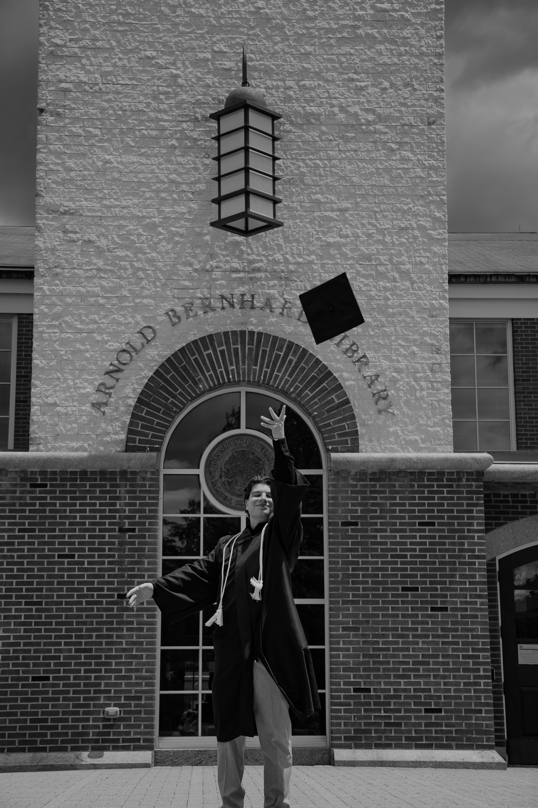
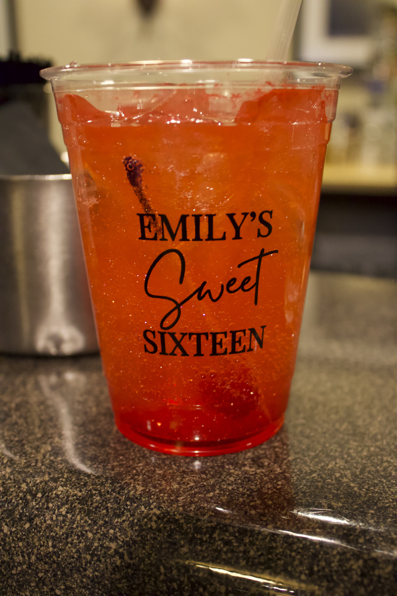

I am Paige Andersen, a senior at University of Massachusetts Amherst. I am graduating in May 2026 with a B.A. in Social Media Marketing. I decided I want to pursue more photography and I want to showcase what my work looks like! I have always loved taking photos mainly on my phone, but after learning how to work a camera I started to become more and more comfortable behind the lens. In Spring 2024 I took an introduction to photography class and in Fall 2024 I took 2 photography classes while I was abroad in Florence, Italy. I am hoping to expand my portfolio more and more!



